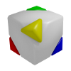

PageUp / PageDown to zoom out/in.|  |
More information: Assembly3D project page. Libaries: Vector and Matrix operations via glMatrix. Theme: Style sheet is based on some demos fom glge.org. Code: The code is based on a sample from learningwebgl.com. Models: The 3D Head Scan "Infinite" by Lee Perry-Smith is licensed under a Creative Commons Attribution 3.0 Unported License. |